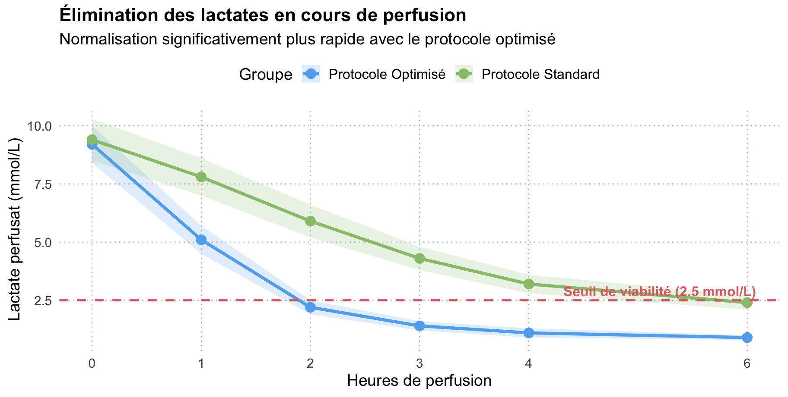
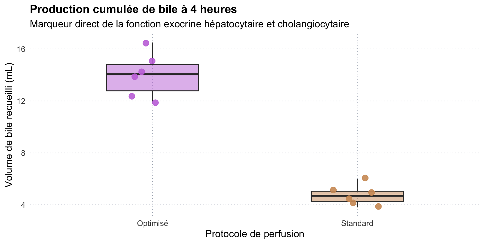

Évaluation dynamique et biomarqueurs de viabilité du greffon
2 octobre 2026
Enjeu clé
Comment tester la fonction hépatique in vitro avant de prendre la décision irréversible d’implanter le greffon ?
Comparaison de deux protocoles sur un modèle préclinique standardisé :
| Paramètre | Protocole Standard | Protocole Optimisé Husson |
|---|---|---|
| Température cible | 37.0 °C | 37.0 °C |
| Transporteur d’O2 | CGR lavés | CGR + Décharge autologue |
| Oxygénation pO2 | 200–250 mmHg | 280–320 mmHg |
| Tamponnage pH | Bicarbonate continu | Régulation automatisée |

Figure 1

Figure 2
Le tableau ci-dessous illustre le titre fixe (sticky) sur diapositive défilable :
| Identifiant | Protocole | Lactate H0 | Lactate H2 | Lactate H4 | Débit Artériel | Bile (mL) | Décision |
|---|---|---|---|---|---|---|---|
| G-01 | Standard | 9.8 | 8.2 | 4.8 | 110 | 4.2 | Récalcitrant |
| G-02 | Standard | 9.1 | 7.5 | 4.1 | 125 | 5.1 | Validé tardif |
| G-03 | Standard | 9.5 | 8.0 | 4.5 | 95 | 3.8 | Non validé |
| G-04 | Standard | 8.9 | 7.1 | 3.9 | 140 | 6.0 | Validé |
| G-05 | Standard | 9.7 | 8.3 | 4.4 | 120 | 4.9 | Validé tardif |
| G-06 | Standard | 9.4 | 7.9 | 4.2 | 105 | 4.5 | Validé |
| G-07 | Optimisé | 9.2 | 2.1 | 1.1 | 185 | 12.4 | Validé précoce |
| G-08 | Optimisé | 8.8 | 1.9 | 0.9 | 210 | 14.2 | Validé précoce |
| G-09 | Optimisé | 9.5 | 2.4 | 1.2 | 175 | 11.8 | Validé précoce |
| G-10 | Optimisé | 9.0 | 2.0 | 1.0 | 190 | 15.0 | Validé précoce |
| G-11 | Optimisé | 9.6 | 2.2 | 0.8 | 225 | 16.5 | Validé précoce |
| G-12 | Optimisé | 9.1 | 2.3 | 1.1 | 195 | 13.9 | Validé précoce |